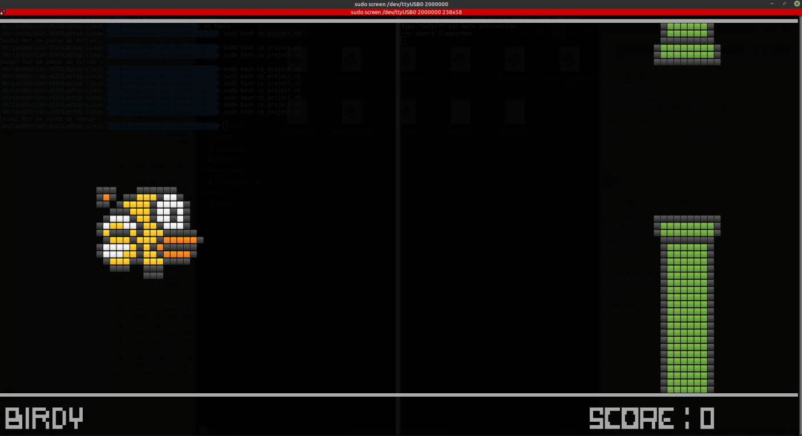
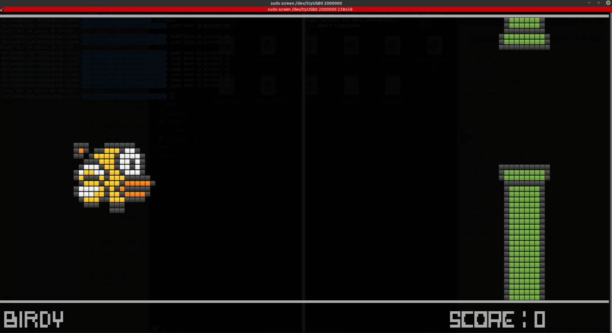
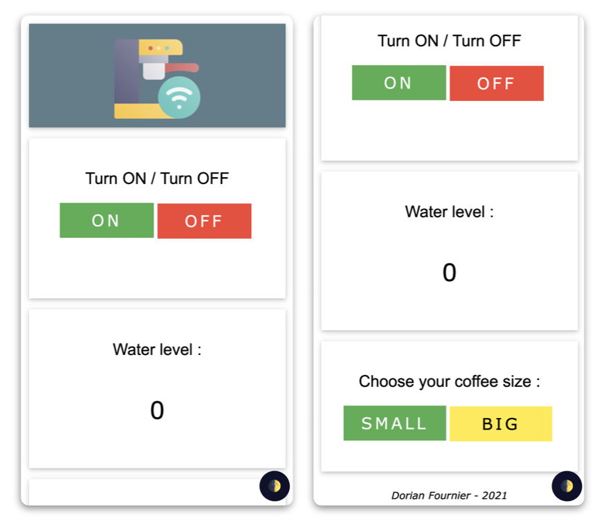
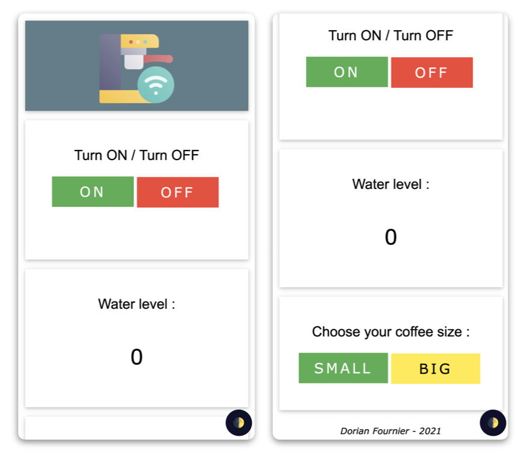

Les pilotes informatiques, généralement appelés "devices drivers"
servent à établir un lien entre un programme et un périphérique. Ils
sont aujourd'hui indispensables aux développements de solutions
embarquées.
J'ai régulièrement été amené à développer des drivers dans le but
de pouvoir utiliser des capteurs/composants au sein de systèmes électroniques.
Exemples de drivers développés :

 

Développement d'une nouvelle version du célèbre jeu "FlappyBird", en microPython afin de l'embarquer sur
cible.
Comme vous l'aurez peut-être compris avec son nom, celui-ci fait référence au langage utilisé durant ce
projet, mais pas que !
Effectivement, cette version embarque également un nouveau personnage au jeu : le Thon.
Le contrôle de ce jeu se fait à l'aide d'un bouton-poussoir et d'un accéléromètre (dans le projet actuel :
LIS3DSH) pour le menu et le choix du
personnage. Ces deux composants sont déjà présents sur l'EvaBoard utilisée pour ce projet
: STM32F407G-DISC1.
Langages et outils utilisés : OS Linux, VS Code, script bash, microPython, Git,
GitHub, SPI, UART, Timer, STM32F407G-DISC1
Pour rester dans le domaine du gaming, voici un projet de développement d'une plateforme de
jeux.
Avec l'aide de 2 camarades, nous avons développé CookiesGames, une plateforme
de jeux pour les enfants gourmands allant de 7 à 77 ans.
Ce projet a été réalisé dans le cadre scolaire en guise d'évaluation des
compétences pour un module de programmation en C++.
Je me suis occupé de la gestion de projet ainsi que du développement du jeu "FindTheCookie" présent dans cette
plateforme. J'ai également servi d'appui technique sur
les points bloquant que pouvaient rencontrer mes camarades dans le développement de
leurs parties.
Logiciels et outils utilisés : C++, Qt, VSCode, Git, GitHub, Google Drive, Gantt, Trello.

Participation au développement d'une box domotique et de ses outils
dans le cadre des Y-days de mon école.
J'ai été attitré, avec 3 autres personnes à la réalisation d'un
garde-manger connecté. Il a donc fallu dans un premier temps
réaliser une étude des besoins clients, suivie
d'un cahier des charges et
d'une analyse fonctionnelle. Après cela, nous avons pu
étudier les différents outils à notre disposition pour la
réalisation de la base de données ainsi que l'IHM (site web).
Ayant des connaissances en développement web, je me suis proposé
pour implémenter la maquette réalisée sur Adobe XD par d'autres
membres du projet.
Langages et outils utilisés : HTML, CSS, JavaScript,
PHP, Bootstrap, GitHub.
 

Projet de modifications d'une cafetière : la Magimix M100.
Le but était de pouvoir la contrôler à distance, en répondant au
cahier des charges suivant.
L'utilisateur doit avoir la possibilité de :
V1 : étudier le fonctionnement du
système, souder des câbles afin
de modifier l'état logique de certaines connexions.
Ajout des modules radio-fréquences aux systèmes (émetteur & récepteur) avec l'utilisation du protocole
ShockBurst.
V2 : utilisation d'un module Wifi (ESP32), cela
me permettant de réaliser une réelle intégration du système avec une
communication serveur-client, en plus de l'ajout
d'une interface graphique en guise d'IHM (Interface Homme Machine).
Langage et matériels utilisés V1 : C embarqué, Cube IDE,
STM32F407G-DISC1, Module nRF24L01+, Breadboard, Boutons poussoir,
câbles.
Langages et matériels utilisés V2 : C++, HTML, CSS, JS, VS Code,
ESP32, PlatformIO, Breadboard,
composants.
Dans le cadre de ma seconde année de formation, j'ai du
réaliser avec ma promotion, un projet dans lequel plusieurs domaines de compétences
ont été évalués.
Nous avons fait le choix, de
réaliser une voiture télécommandée "from scratch".
Je me suis proposé pour le développement de la partie sur la
communication sans fil entre les deux objets techniques
présents dans le projet (OT1 - véhicule | OT2 - télécommande). Cette
partie m'a été attribuée et m'a donc permis de participer à la
réalisation des deux OT en étant régulièrement en communication avec
les personnes s'occupant des unités de traitement.
Je me suis également vu attitrer la gestion globale de la partie software du
projet. Cette tâche supplémentaire m'a permis d'implémenter les divers codes réalisés et
d'apporter des modifications permettant d'optimiser les transferts de données.
Si vous souhaitez en savoir plus sur ce projet... rendez-vous sur la
page entièremment dédiée à celui-ci, en cliquant sur le bouton ci-dessous.

Durant mes deux premières années de formation, j'ai eu la
possibilité d'acquérir de solides compétences dans la réalisation de
circuits imprimés. Il a fallu au cours de celles-ci, réaliser
plusieurs cartes électroniques avec des méthodes de design et de
fabrication totalement différentes les unes des autres.
La première carte réalisée fut une table de mixage, permettant comme
son nom l'indique, de mixer deux entrées stéréo ensemble. Cette
carte a été entièrement réalisée à l'aide de composants traversants.
J'ai également dû réaliser des cartes avec des Composants Montés en
Surface (CMS / SMD : Surface Mounted Device). Les images ci-contre,
montrent la réalisation d'un transceiver USB-UART
à l'aide de CMS et d'un unique composant traversant pour le header.
Logiciel utilisé : Altium Designer.

Passionné par les nouvelles technologies et l'électronique, je
réalise régulièrement de petits projets dans ces domaines-ci.
Voici certains projets sur lesquels j'ai travaillé :


Passionné par les nouvelles technologies
Avec toute cette curiosité, j'ai quotidiennement envie d'explorer de nouvelles branches
des technologies !
C'est pour cela que je réalise régulièrement des projets personnels !
Voici les domaines que je souhaiterai travailler durant mes prochains projets :